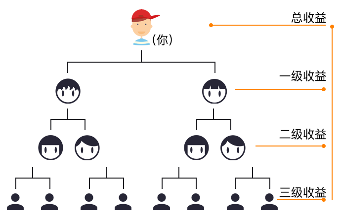

甜蜜邀请是移公社回馈用户的返利方式。用户可通过分享链接或二维码邀请好友下载成为移公社一员，当您的好友成功注册为移公社用户后，ta在平台上所产生的每笔消费，您都可以获得相应比例的甜蜜佣金，即甜蜜收益，该收益将自动转入您的钱包账户。
每一个成功发出甜蜜邀请的用户，可获得的甜蜜收益共有三级来源，包括一级收益、二级收益和三级收益。如您成功邀请A，A即成为您的下级用户，同时，当A成功邀请B，B再成功邀请C，则B、C将自动成为您的二级和三级用户。每个下级用户在线上完成的每笔消费，您都可以获得相应比例的甜蜜收益。如下图所示：
甜蜜收益参与对象为使用平台的所有用户，且状态为正常使用，无风险交易记录者。
1、好友在分享页面进入注册即可算为一个下级用户；同时，好友通过其他渠道进入注册时填写平台已有用户作为邀请人，也可算为该用户的下级用户。
2、好友注册后在移公社平台产品中产生交易，平台以交易量为计算最后收益的依据。
3、平台中各类产品或者服务产生的收益规则有所不同，目前支持甜蜜收益的交易类型有以下几种：
| 项目 | 一级比例 | 二级比例 | 三级比例 |
|---|---|---|---|
| 购物 | |||
| 团购 | |||
| 发布小蜜媒体 |
4、下级用户数量及收益金额可在我的甜蜜收益中查看。
5、甜蜜邀请为福利型佣金，用户获得的佣金比例会根据实际情况所调整，最终收益按实际到帐金额为准，移公社拥有最终解释权。
收益产生时间：您的下级用户订单支付成功即产生“待到帐”收益。
交易完成后，收益到帐，到帐时间根据业务不同而有所不同：
购物类：订单状态为“已完成”后7日到账；
团购类：团购券全部使用完成后7日到账；
小蜜媒体：小蜜媒体订单审核通过，投放开始日期后的7日到账。
甜蜜收益仅可在移公社平台上使用，可用于平台消费或者提现，如用户帐号暂停使用，则移公社将取消该用户帐号内甜蜜收益相关使用权益。
如发现用户使用不正当手段获取收益，或使用平台做违法交易，平台有权在不通知用户的情况下取消收益并发起追偿；
一旦注册成为移公社用户即视为同意本收益规则。